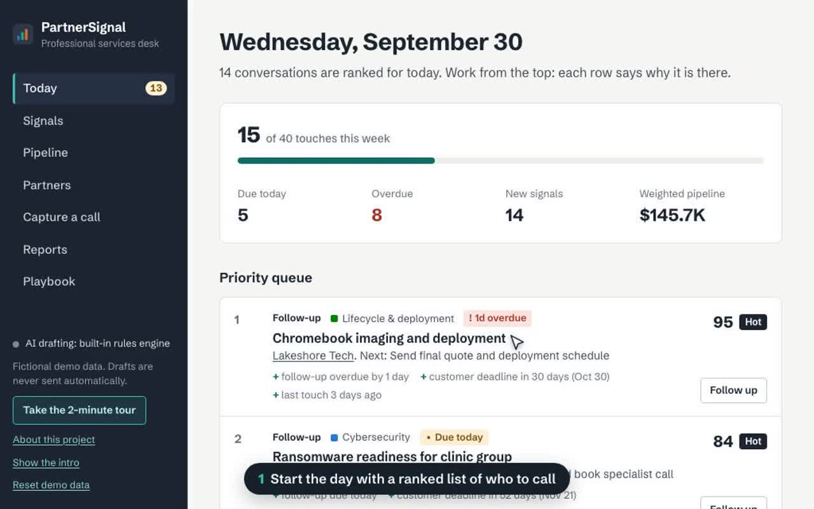
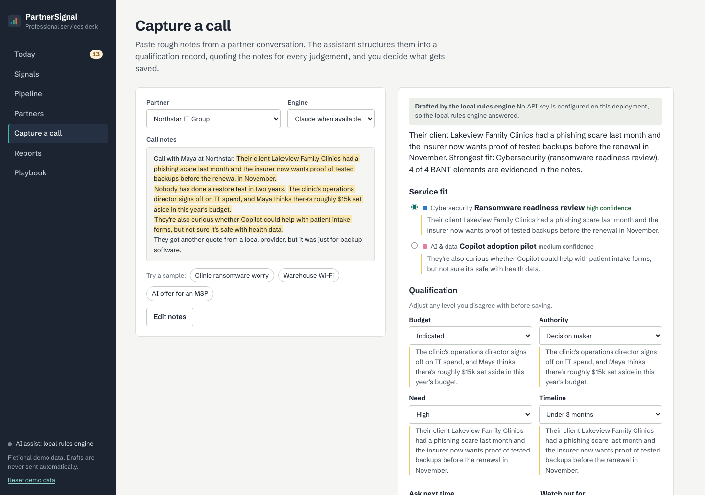
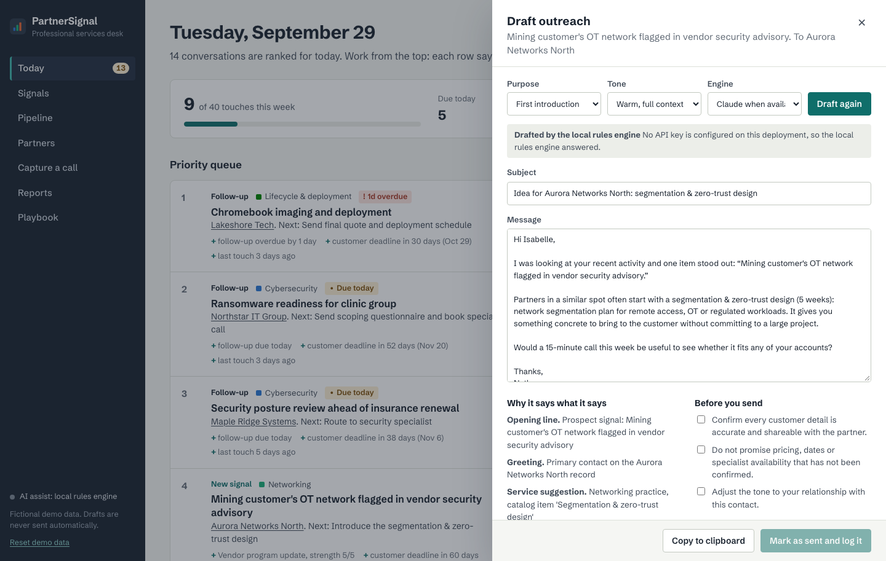
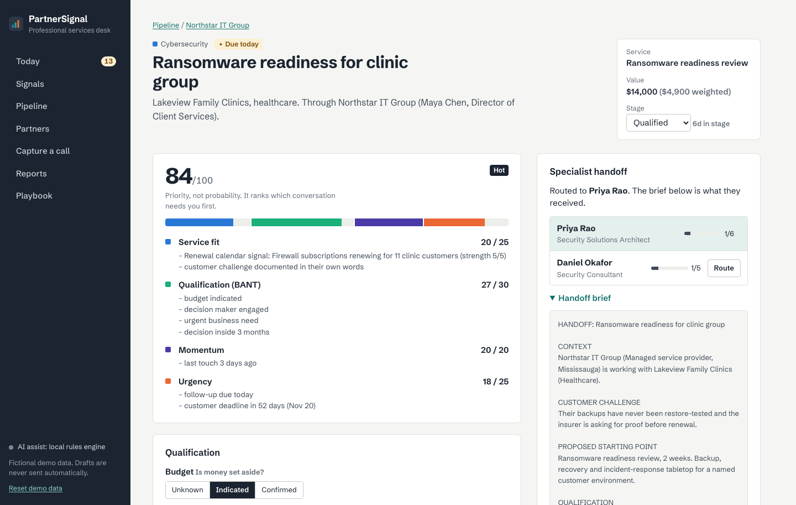
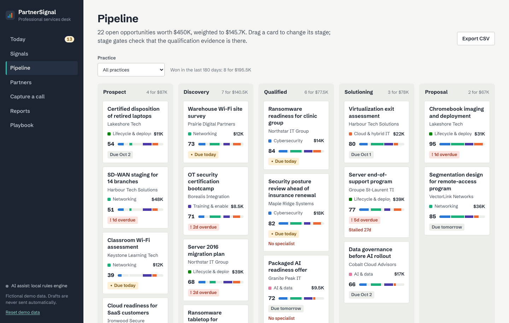

Application
FastAPI + React
Typed API, SQLAlchemy data model, and a TypeScript interface with a guided tour, keyboard support and a mobile layout.
PythonFastAPIReactTypeScript
Partner operations · IT professional services · Applied AI
A workspace for the partner side of IT services. It finds which reseller partner to call, turns a phone call into a qualified opportunity with AI, brings in the right specialist, and keeps every follow-up on time. I built it to explore how technology channels sell services, and where AI helps without taking the judgement away. It is live, and you can try it in two minutes.

Recorded from the live app: ranked day, call capture, specialist handoff, reviewed outreach, pipeline.Open it yourself
The workflow
Selling services through reseller partners comes down to a few repeatable jobs: know who to talk to, understand the need, bring in the right expert, follow up, and keep an honest pipeline. PartnerSignal has a working feature for each.
The workFinding which partners to talk to
Know exactly who to call, and whyA signal feed built from renewals, products reaching end of support and purchase patterns, plus a map of the services each partner has never sold.Signals · Whitespace map
The workUnderstanding the need and qualifying it
Turn a phone call into a qualified opportunityPaste rough notes; the AI assistant returns the customer's problem, the best-fit service and budget, authority, need and timeline, quoting the notes as evidence.Capture a call · BANT
The workWorking with technical specialists
Hand off to the right specialist in one clickRoutes the deal to the least-busy specialist in that service line and writes the handoff brief: context, challenge, scope, open questions.Specialist routing · Handoff brief
The workPersonal outreach and reliable follow-up
Personal outreach, with a person in controlDrafts e-mails that explain which record each line came from. You edit, tick a review checklist, then log it. Every touch sets the next follow-up date.AI drafts · Follow-up cadence
The workKnowing the services, and where AI fits
A playbook for every service lineWhat to listen for, what to ask, what to offer, and which AI use cases to raise, across cybersecurity, cloud, networking, AI, lifecycle and training.Playbook
The workKeeping an accurate pipeline
A pipeline that can't be fakedA deal can't move to Qualified without the evidence. Weekly reports show pipeline, win rate and follow-through, with a CRM-ready export.Pipeline · Reports
AI with judgement
Call notes are structured by the Claude API when a key is configured, or by a built-in rules engine that returns exactly the same format. Either way, every judgement quotes the notes it came from, can be changed before saving, and nothing is ever sent automatically.


Decisions you can explain
Every conversation gets a 0–100 priority made of four parts anyone can check: service fit, qualification, momentum and urgency. It ranks where attention should go first; it never pretends to be a probability of winning.


Built like real software
A Python API with a React interface, tested on every change and deployed automatically. It reseeds each morning so the demo always has something due today.
Application
Typed API, SQLAlchemy data model, and a TypeScript interface with a guided tour, keyboard support and a mobile layout.
AI
Structured outputs validated against a schema, a fallback engine with the same format, rate limits, and evidence quoted for every judgement.
Quality
39 automated tests, lint and type checks on every push; a Docker image deployed to Render and kept warm during business hours.
Two minutes, no sign-up
Seven steps, from finding the right partner to reporting on the week. All companies and people are fictional.